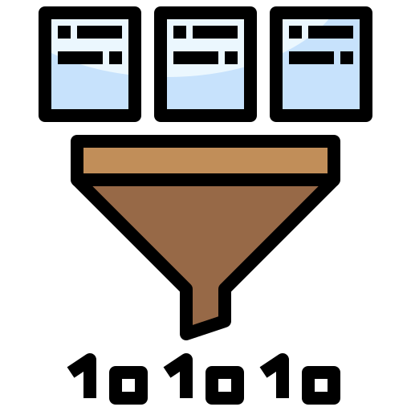

 Convert Swagger response to Ruby code
Response
{ "status":"ok", "message":"Success", "active":true, "id":14 }
::]]]
Status Code
Description
Convert & Copy
RESET INPUT
Ruby code formatted
response 200 do key :description, "Sign up" schema do property :status do key :type, :string key :example, "ok" end property :message do key :type, :string key :example, "Success" end property :active do key :type, :boolean key :example, true end property :id do key :type, :integer key :example, 14 end end end
Develop by
TranHaiQuan